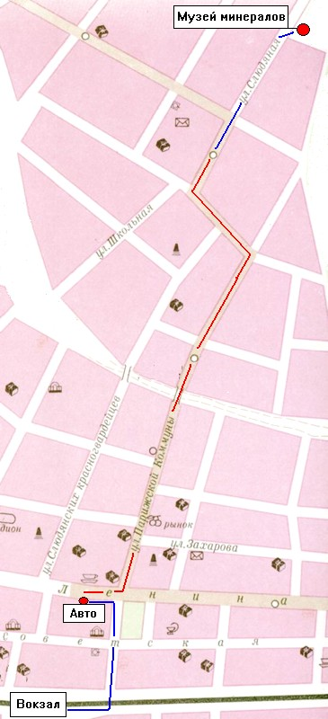

Как добраться от ж.д. вокзала до музея ?
1. От вокзала до автостанции пешком через виадук.
2. Маршрут N 1 в сторону Рудоуправления до остановки "Улица Слюдяная"
(спросить у водителя)
3. От остановки до музея пешком по ул. Слюдяная, дом 36.

АДРЕС МУЗЕЯ: Россия, Иркутская обл., г. Слюдянка, ул.Слюдяная, 36
НОМЕРА ТЕЛЕФОНОВ: 21-440, 21-560, код города 39544
ЭЛЕКТРОННАЯ ПОЧТА: mm@slud.ru